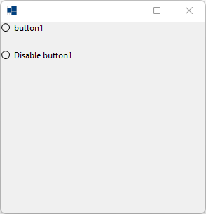
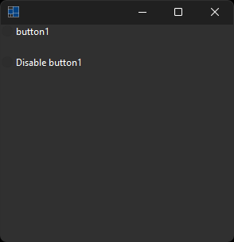
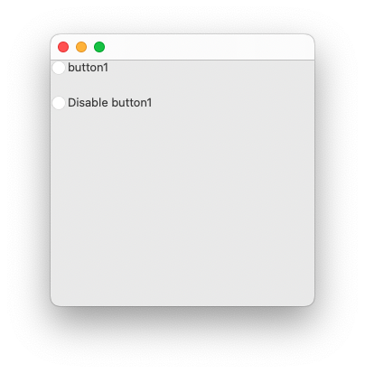
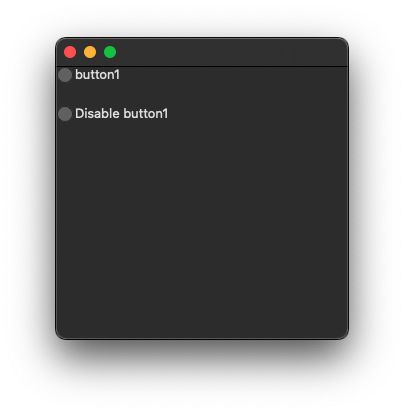
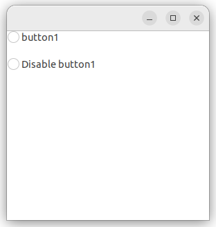
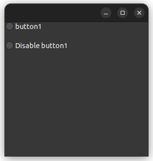

|
xtd
0.2.0
|
Loading...
Searching...
No Matches
enable_changed_event.cpp
demonstrates the use of idle event.
- Windows
- 

- macOS
- 

- Gnome
- 

#include <xtd/forms/application>
#include <xtd/forms/form>
#include <xtd/forms/message_box>
#include <xtd/forms/radio_button>
using namespace xtd;
using namespace xtd::forms;
namespace enable_changed_event_example {
public:
form1() {
radio_button1.location({0, 0});
radio_button1.name("radio_button1");
radio_button1.size({100, 17});
radio_button1.text("button1");
radio_button1.enabled_changed += event_handler(*this, &form1::radio_button1_enabled_changed);
radio_button2.location({0, 39});
radio_button2.name("radio_button2");
radio_button2.size({150, 17});
radio_button2.text("Disable button1");
radio_button2.checked_changed += event_handler(*this, &form1::radio_button2_checked_changed);
client_size({292, 273});
controls().push_back_range({radio_button1, radio_button2});
name("Form1");
}
private:
message_box::show("This button has been disabled.");
}
radio_button1.enabled(false);
}
radio_button radio_button1;
radio_button radio_button2;
};
}
auto main() -> int {
application::run(enable_changed_event_example::form1 {});
}
Represents the base class for classes that contain event data, and provides a value to use for events...
Definition event_args.hpp:18
static void run()
Begins running a standard application message loop on the current thread, without a form.
virtual drawing::point location() const noexcept
Gets the coordinates of the upper-left corner of the control relative to the upper-left corner of its...
Represents a window or dialog box that makes up an application's user interface.
Definition form.hpp:54
static dialog_result show(const iwin32_window &owner)
Displays a message box in front of the specified window.
Enables the user to select a single option from a group of choices when paired with other xtd::forms:...
Definition radio_button.hpp:40
The xtd::forms namespace contains classes for creating Windows-based applications that take full adva...
Definition texts.hpp:217
The xtd namespace contains all fundamental classes to access Hardware, Os, System,...
Definition abstract_object.hpp:8
Generated on Fri May 16 2025 11:30:54 for xtd by Gammasoft. All rights reserved.